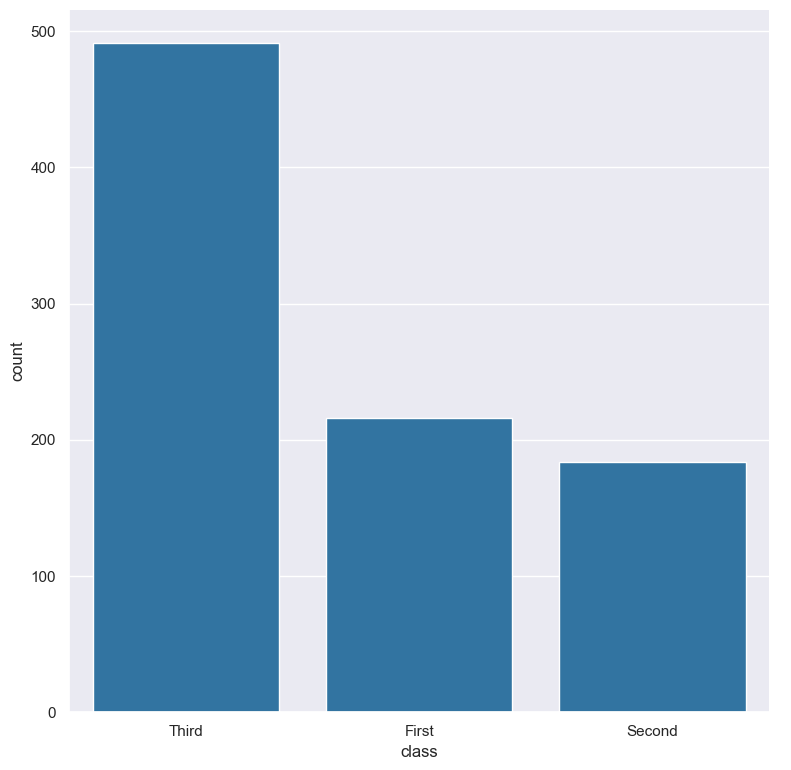
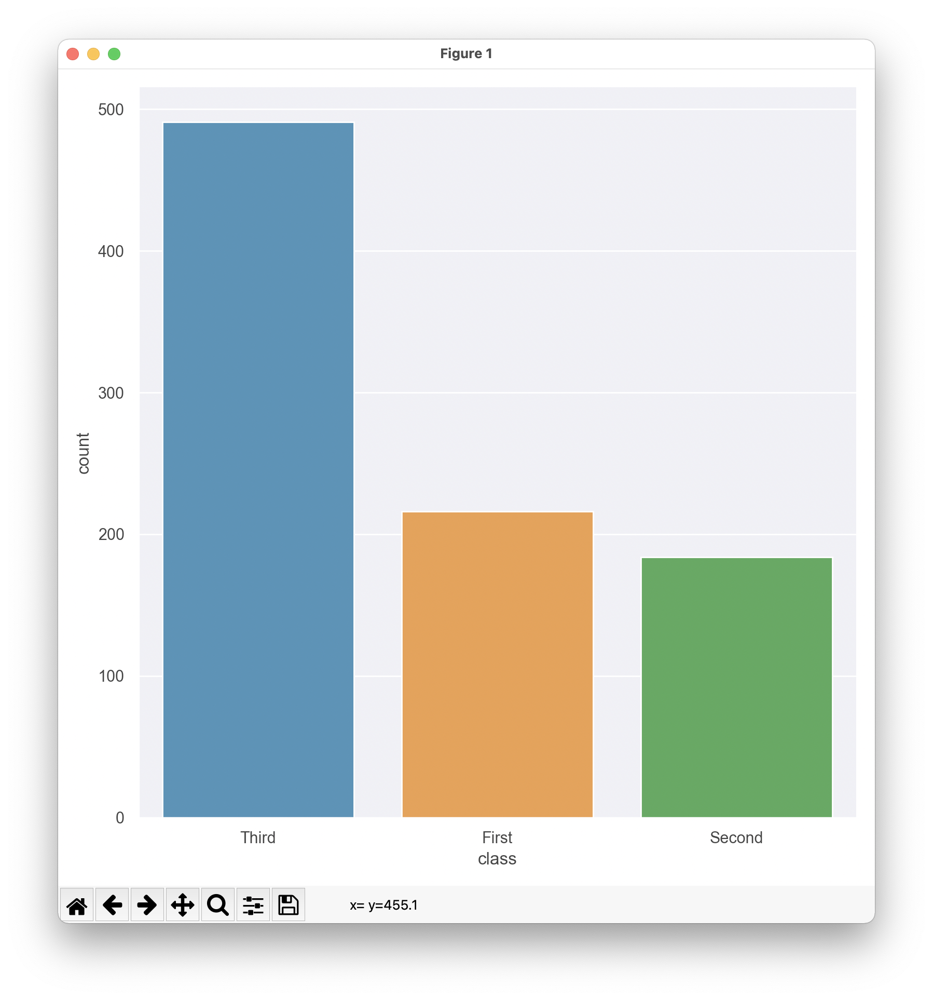

Saving and viewing plots
Hatch provides several plotting commands for visualising data as plots.
Plots can be saved to files or viewed interactively.
Plots are saved to a file by default
Hatch’s default behaviour for plotting commands is to save the resulting image to a file in PNG format.
For example, the following command generates a count plot of the class feature from the input file titanic.csv and saves the resulting plot to a file called count.class.png:
hatch count -x class < titanic.csv
The image below shows the resulting plot:
{kind=link}
The default output plot file name is chosen using the following information:
The type of plot being generated (e.g. hist, scatter, count, etc).
The name(s) of the columns that have been selected for plotting on the axes.
Optionally the names of columns that have been selected for grouping (specifically
--hueand--rowand--colfor facet plots).The file name extension is based on the format of the output file. By default this is
png, but it can be overridden with the--formatoption.
As a slightly more complex example, consider the command below:
hatch scatter -x sepal_length -y petal_length --hue species < iris.csv
Hatch will save the output plot in a file called scatter.sepal_length.petal_length.species.png.
Note
Hatch will avoid using the name of a file that already exists when choosing a default output file name for a plot.
For example, if the file count.class.png already exists in the current directory Hatch will try to
find a new unique name by appending a number, e.g. count.class_1.png. If that file name exists
it will increment the number and try again, e.g. count.class_2.png, and so on.
This avoids overwriting an existing file by accident.
If you don’t want this behaviour then you can specify a file name yourself and Hatch will write the plot to that file regardless of whether it already exists.
Specifying an output file name explicitly
You can override the default behaviour and specify the name of the file to use with the -o <filename> or --out <filename> option.
For example, the following command saves the output plot to a file called example.png:
hatch count -x class -o example.png < titanic.csv
Warning
If tell Hatch to save a plot to a specific file name, and that file already exists, Hatch will overwrite the contents of the file with the new plot. This will lose old contents of the file.
Output plot graphics file format
By default Hatch will save output plots in the PNG file format. However, this can be overridden with the --format {png,jpg,pdf,svg} option.
Supported file formats:
Hatch supports the following file formats when saving plots to file:
For example, the following command saves the output plot in SVG format, to a file called titanic.class.count.svg:
hatch count -x class --format svg titanic.csv
Note
If you use -o (or --out) to specify an output file name, Hatch will use that name verbatim and will not append a suffix to the file name indicating the file type. Of course you may include a suffix in your own chosen name, however, this suffix does not influence the type of graphics format used. The only way to change the output graphics file format is with the --format option (otherwise the default png type is used).
Interactive plots
The --show option overrides the default behaviour and causes the plot to be displayed in an interactive window (and not saved to a file). This assumes you are using Hatch in an environment with a graphics display.
This is illustrated below:
hatch count -x class --show titanic.csv
The plot will appear in an interactive window like so:
{kind=link}
Note that interactive plot commands pause the computation in a command chain. This is significant when the interactive plot is not the last command in the chain. For example, suppose you have a command like so:
hatch ... + count -x class --show + ... <rest of the command chain>
In this circumstance the command chain will pause while the interactive count plot is
open. The rest of the command chain will resume when the plot is closed.
Therefore, if a command chain contains multiple interactive plots, only one plot will be shown at a time.